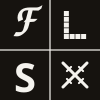
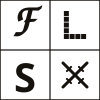
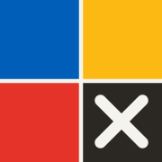

The idea made visible: fidelity resolving — a coarse hand sketch → discrete pixels → clean vector → a gate. One primary dominates per surface; red only ever flags; the gate is never pure black. Full spec + do/don't in README.md. Tokens: tokens.css.
Marks
mark-full.svg app icon · ≥40px
mark-reduced.svg 24–40px · dense UI

mark-mono-knockout.svg dark grounds

mark-mono-ink.svg light grounds
Wordmarks
wordmark-horizontal.svg — primary lockup
wordmark-stacked.svg — narrow / square
⚠️ Wordmark SVGs reference Archivo + IBM Plex Mono by name (text not outlined). Self-hosted in the app; if a face is missing they fall back to a system grotesque/mono.
Favicons
favicon.svgfavicon-32favicon-16

apple-touch-180favicon.ico
Palette — primitives of color
--a-paper#f5f3ee · page ground
--a-paper-2#edeae1 · card ground
--a-ink#16130f · type
--a-muted#6c6659 · meta
--a-line#d7d2c6 · hairline
--a-gate#2b2823 · gate (not black)
--a-blue#005eb8 · rung 1 SPEC
--a-yellow#fdb913 · rung 2 WIRE
--a-red#e63329 · rung 3 flag
Type roles
Display / wordmark — Archivo 500–900
What needs you
Mono / annotations — IBM Plex Mono 400–600
3 DECISIONS · OLDEST 2H · EVIDENCE INLINE
Hand + Bitmap — Caveat 700 / Silkscreen (mark only, never running text)
These appear only inside the Resolution mark (the F and the pixel L).
Standalone asset index — not linked from the app. Deployed at /brand/. Source: design handoff FLS Admin — Workbench (Dark Rail), 2026-08-18.